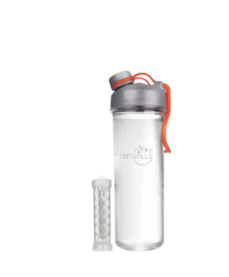
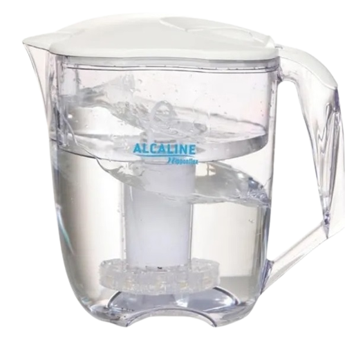
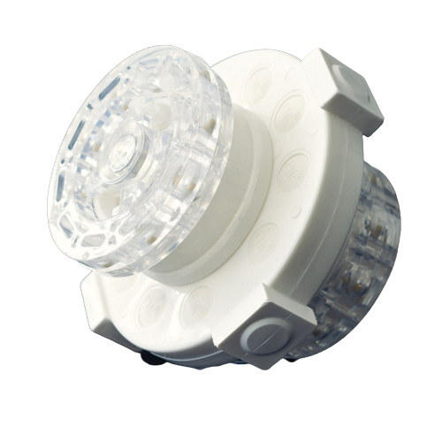
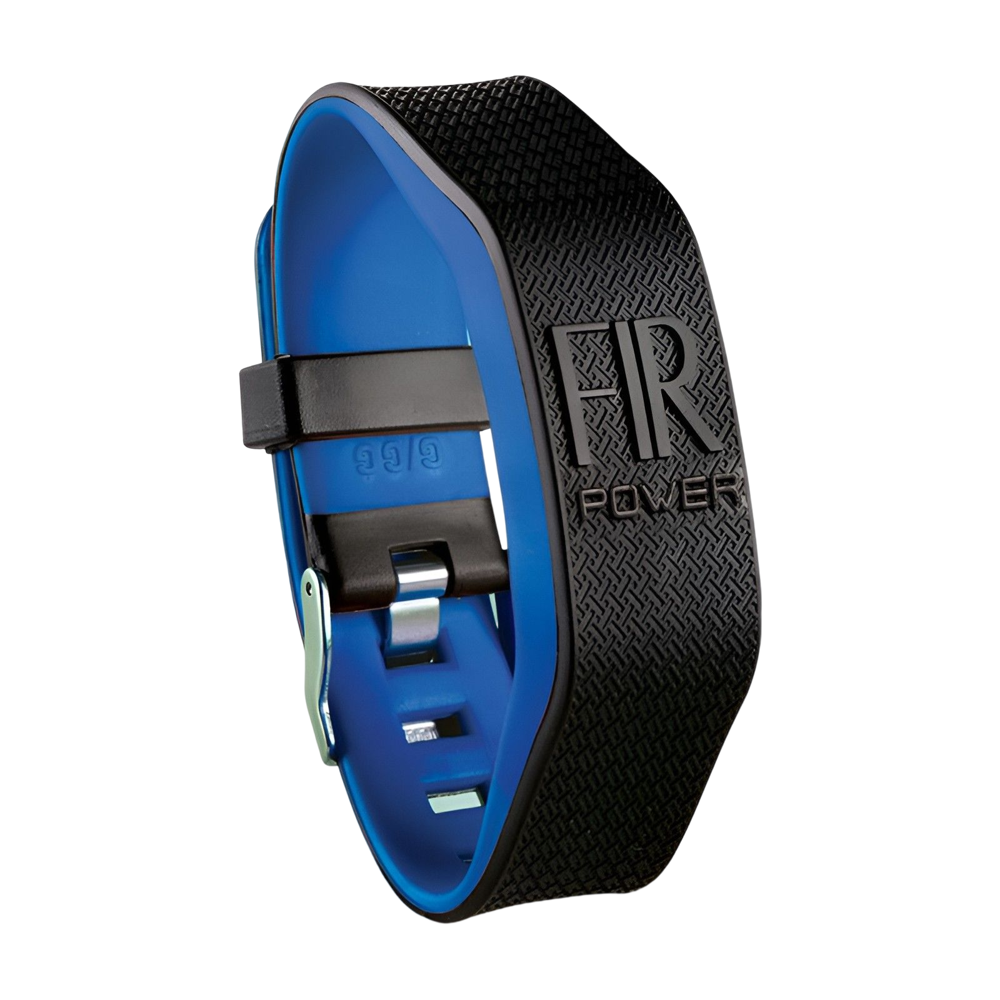
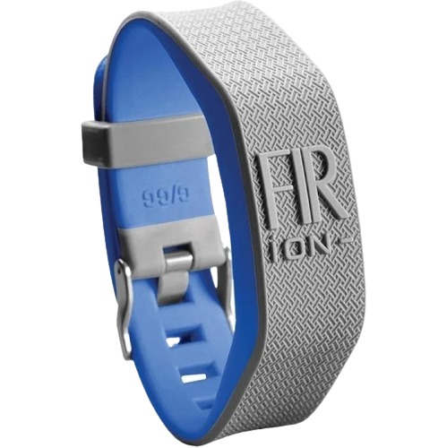
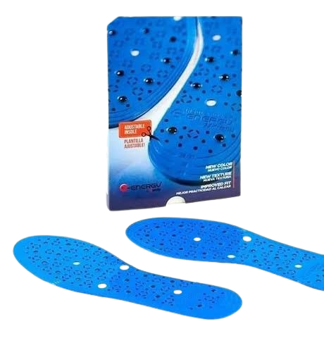

Squeeze - Ação antioxidante no organismo. Estimula o funcionamento dos rins. Auxilia na eliminação de gordura. Melhora a circulação do sangue. Evita retenção dos líquidos. Estabelece imunidade. Auxilia e regulariza o intestino. Nutre as células. Ajuda a desintoxicar o sangue. Magnetiza e equilibra a água.
Jarra Purificadora - Ação antioxidante no organismo. Estimula o funcionamento dos rins. Auxilia na eliminação de gordura. Melhora a circulação do sangue. Evita retenção dos líquidos. Estabelece imunidade. Auxilia e regulariza o intestino. Nutre as células. Ajuda a desintoxicar o sangue. Magnetiza e equilibra a água.


Alcaline Power - Magnetiza e equilibra a água. Reduz moléculas orgânicas. Auxilia no processo de detox do corpo. Reduz microorganismos. Reduz cloro e trihalomentanos. Auxilia a relugar o intestino. Quebra os clusteres da água Aumenta o ph da água. Auxilia a reduzir manchas e rugas. Elimina metais pesados.
Bracelete fir-power - Pulseiras com tecnologia FIR. Contém imãs de ferrite de barion, que emitem energia magnética. Ronco. Renite. Dor de cabeça (enxaqueca). Pressão arterial. Má circulação sanguínea.


Bracelete fir-ion - Ajuda a prolongar um sono profundo e reparador. Aumenta a força muscular. Promove o rendimento em atividades físicas. Previne e combate o estresse. Ajuda a pressão arterial. Alivia dor e febre. Aumenta a concentração de cálcio. Ajuda em alguns casos de diabetes. Ajuda em alguns casos de fibromialgia. Ajuda a expulsar as toxinas do corpo. Colabora para o tratamento osteoarticualar.
Paumilha - Oferecem efeito terapêutico com poder de estimular as terminações nervosas. Alivia tensão e cansaço do corpo e dos pés, relaxando os músculos e articulações, além de contribuir para uma temperatura agradável aos pés.
